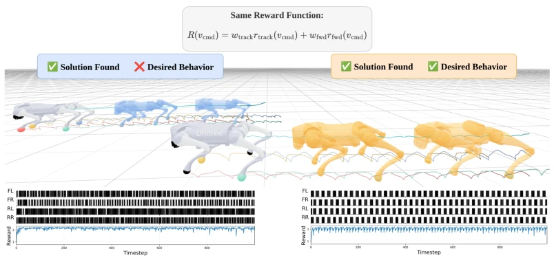
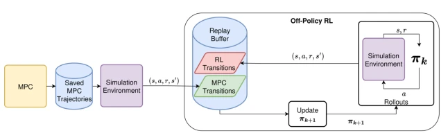
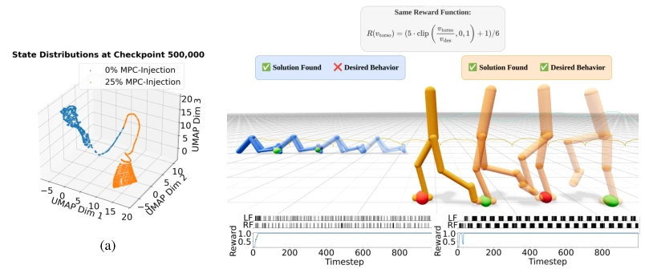
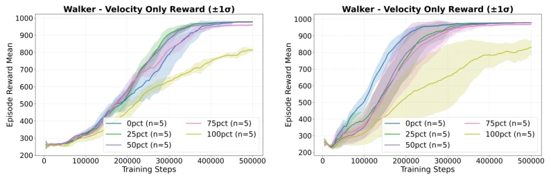
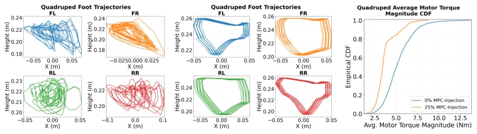
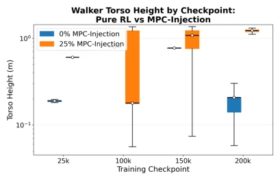
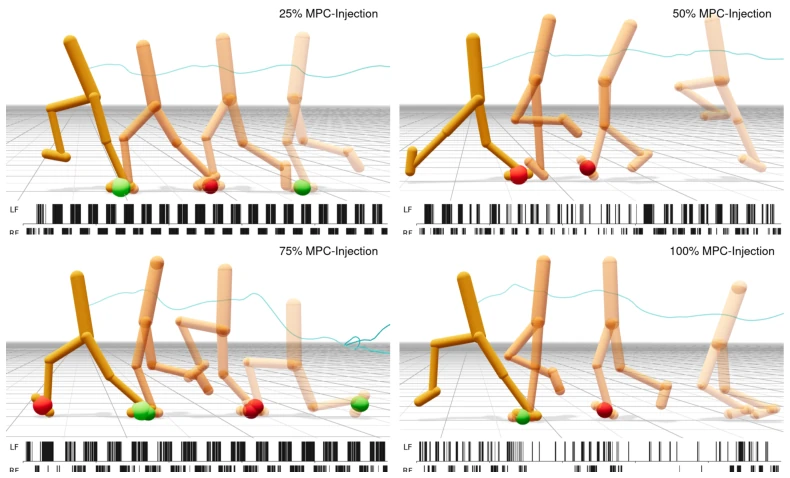
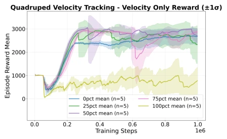

This paper opens a 'backdoor' for RL locomotion. Pure RL is prone to slacking off, such as legs shaking randomly or torso dragging on the ground; although scores are high, they are unusable. Reward shaping is too exhausting, imitation learning requires motion capture. MPC-Injection is simple and direct: throw MPC trajectories into the Replay Buffer, forcing RL to 'compulsorily' learn the gaits MPC likes. Although Reward is not changed and Discriminator is not added, the effect is comparable to 21 reward shaping terms. However, this method relies on MPC itself being reliable, and the 'pull' may weaken in the later stages of training; it belongs to 'clever strength' rather than 'hard work'. It proves that data distribution bias is sufficient to guide behavior basin selection, saving complex reward engineering, but robustness under complex terrain or long-term training still needs verification, and the requirements for MPC designers are indirectly increased.
Legged robot RL often falls into local optima, such as legs shaking randomly or torso dragging on the ground; although scores are high, they are unusable. Existing solutions either rely on reward shaping [11, 12], requiring extensive parameter tuning and retraining when changing behavior; or rely on imitation learning [4, 5], requiring motion capture data, motion remapping, and discriminators, with high engineering costs. This paper aims to solve how to efficiently guide policy convergence to a specific behavior basin under simple rewards, avoiding 'high score low ability'. Traditional methods either have excessively high costs or rely on specific data sources when specifying behavior, lacking a low-cost and universal behavior guidance mechanism, especially when no ready-made motion capture data is available. Underspecified reward leads to multiple high-return solutions, requiring selection of a specific solution.

Figure 1: Snapshots of two RL policies trained with the same velocity-tracking reward. Left: pure RL learns to vibrate its legs, producing irregular footsteps. Right: RL with 25% MPC-Injection learns to trot. Colored spheres mark foot contacts and the raster plots below show footstep timing. Both policies achieve similar return, but only the MPC-Injection policy produces a deployable gait. A more dramatic case on a 2D walker appears in Figure 4b.
The core is changing the state distribution of the Replay Buffer. Offline generate MPC trajectories (same environment as RL), inject into RL's Replay Buffer by ratio (e.g., 25%). During training, Actor/Critic sample mixed data, indirectly 'pulled off course' by the state distribution accessed by MPC. Do not modify Reward, no cloning loss, no discriminator. MPC output torque converted to position target then injected. The essence is utilizing off-policy properties, guiding the policy into the controller-induced behavior basin through data distribution bias. Specific process includes: 1. Offline generate MPC trajectories; 2. Calculate RL reward and convert action space; 3. Mix into Buffer according to injection ratio; 4. Standard SAC/TD3 update. The key lies in MPC and RL sharing MDP, ensuring state distribution consistency. Offline generation allows precise control of injection ratio, avoiding online computation overhead.

Figure 2: MPC-Injection: An MPC controller is deployed in the same simulation environment used for RL training and the resulting trajectories are stored. During RL training, a target fraction of MPC transitions are injected into the replay buffer alongside on-policy transitions, biasing actor and critic updates toward the controller’s behavior basin while leaving the task reward unchanged.

Figure 4: State-space structure and qualitative behavior under 0% and 25% MPC-Injection with the same velocity-tracking reward. (a) UMAP embedding of the visited state distributions showing that 25% MPC-Injection occupies a compact, structured region of state space while 0% (pure RL) occupies a more diffuse region. (b) Behavior snapshots and footstep raster plots. The 0% policy (blue walker, orange torso trajectory) drags its torso along the ground in a scooting gait. The 25% policy (orange walker, cyan torso trajectory) walks upright with periodic alternating footsteps. Red spheres mark right-foot contacts, green spheres mark left-foot contacts.
Tested on 2D Walker and Go2 quadruped robots. Compared Pure RL, Reward Shaping (21 terms), AMP. Metrics include gait quality, torque distribution, sim-to-real performance. Found 25% injection ratio most stable, Pure RL learns dragging/shaking, MPC-Injection learns trot. Sim-to-real verified generalization. Ablation shows injection ratio too high leads to behavior divergence. Compared to AMP, no discriminator needed; compared to Reward Shaping, no 21 terms tuning needed. Proves under simple speed tracking reward, MPC-Injection can produce deployable gait, and sim-to-real successful. Reward Shaping occasionally converges to kneeling, AMP prone to drift.

Figure 3: Episodic return on the walker velocity-tracking reward across MPC-Injection ratios (0%, 25%, 50%, 75%, 100%) for (a) SAC and (b) TD3. Several injection ratios converge to similar episodic return, confirming that the task reward admits multiple high-return solutions. Because the reward is underspecified for the desired behavior, training curves do not reflect which behavior basin each policy has converged to. Basin membership is evaluated separately in Figures 4a and 4b.

Figure 5: Quadruped behavior comparison between pure RL and 25% MPC-Injection in simulation. (a) Footstep trajectories under pure RL show chaotic, irregular patterns. (b) Footstep trajectories under 25% MPC-Injection show structured, periodic patterns matching a trotting gait. (c) Cumulative distribution function of average motor torque magnitude per episode, showing that 25% MPC- Injection produces lower-torque behavior consistent with the MPC controller’s energy-cost objective.

Figure 8: Log-scale box plot showing the evolution of torso-height distributions at different training checkpoints for 0% and 25% MPC-Injection, where MPC-Injection biases learning toward the gait demonstrated by MPC transitions and leads to earlier emergence of upright locomotion under the same reward.
其他图片Other Figures

Figure 9: Walker behavior under varying MPC-Injection ratios (25% top-left, 50% top-right, 75% bottom-left, 100% bottom-right). Each panel pairs a walking-behavior snapshot with a raster plot of footsteps. As the injection ratio increases above 25%, the behavior becomes more erratic and diverges from the MPC behavior.

Figure 10: Quadruped training curves across 0%, 25%, 50%, 75%, and 100% MPC-Injection for SAC. Behavior convergence emerges around 400k timesteps; on a subset of seeds, drift was observed after extended training (see Appendix D for the predicted mechanism).